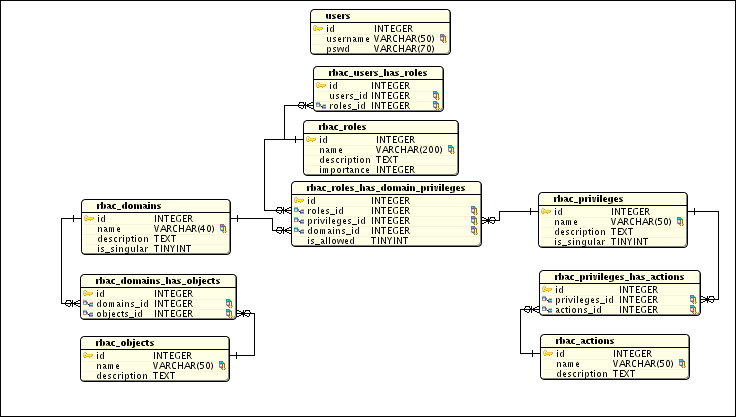
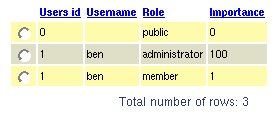
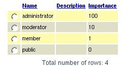
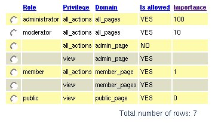
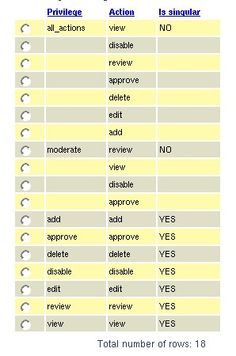
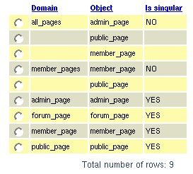

Here is a the database design for a "fine grained" Role Based Access Control (RBAC) system I am currently working on.

The general concept is that a user can have one or more roles.
- Each role is defined in the in "rabac_roles_has_domain_privileges" table.
- A role is defined as the right (or denial) to exert a privilege on a domain.
- A role is given an 'importance', i.e. an integer value between 0 and 100. The higher the number the greater the importance.
- A domain is a collection of objects a user may want to access (or perform an action on), such as a 'member page' or 'forum topic'.
- A privilege is a collection of actions a user may want to perform on an object, such as 'view', 'add', 'delete', 'edit'.
Briefly (and I will be adding more information with time)
- A domain can either be singular or plural.
- A domain is "plural" if it is a collection of more than one object.
- A domain is "singular" if it corresponds to only one object (so the object and domain name will be the same)
The same can be said about actions. (At this stage it is worth noting that plural domains will always finish with a 's'. Domains and objects are named by 'nouns' whereas, privileges and actions are named by 'verbs'.).
A role is defined by several domain-privilege pairs.
- Domains that are singular have precedence over their corresponding object defined in a plural domain. This is important to define "fine-grained" role permissions.
For example, a singular domain defined by the action 'view' will have precedence over a plural domain defined by the actions 'add', 'edit', 'view'. (The plural domain also contains the action 'view' but will yield to the singular domain.)
The same can be said for privileges.
Here are somemore pictures that should hopefully clarify things:
Users has roles

This picture shows that the user 'ben' has the 'administrator' and the 'member' role. This is just an example since the 'administrator' role automatically has access to all objects and can perform all actions.
Roles definition

The administrator role is the most important, followed by moderator, then member and finally the last is public.
NOTE: Two different roles can have the same importance. This is allowed.
Roles as permissions

Take a look at the moderator role definition. You will see that the moderator can perform all_actions on all_objects, except for the 'admin_page', which he is only allowed to view.
Privileges has actions

This picture clarifies the idea of 'singular' and 'plural'. Hopefully it is self explanatory.
Domains has objects

This project (including the admin panel) is 85% complete. It is already useable and written in PHP, so if you would like to try it out send me an email at ben at sqlrecipes dot com (If you do try it out, I would appreciate your feedback and suggestions.)
If you have any suggestions concerning this article please post your comment below.